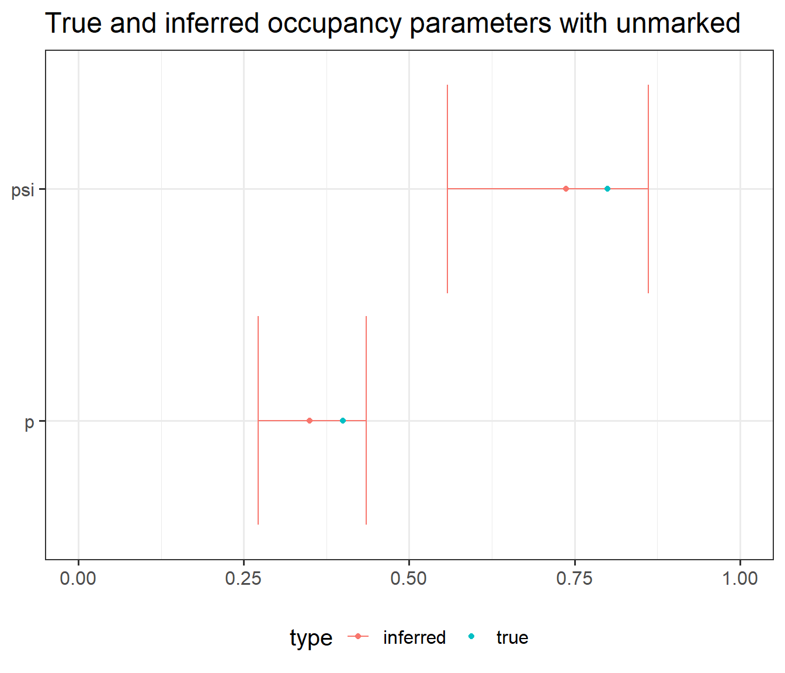

set.seed(42)
M <- 100 # number of sites
p <- 0.4 # detection probability
psi <- 0.8 # occupancy
# Simulate a number of visits for each site
nvisit <- rpois(n = M, lambda = 3)
nvisit[nvisit == 0] <- 1 # Don't allow zero visits
# Initialize vectors
z <- vector(mode = "numeric", length = M)
y <- vector(mode = "list", length = M)
for (i in 1:M) { # for each site
# Simulate true presence/absence at site i
zi <- rbinom(n = 1, size = 1, prob = psi)
# Simulate observed presence/absence at site i for all visits
yij <- rbinom(n = nvisit[i],
size = 1, prob = p*zi)
z[i] <- zi # True sites states
y[[i]] <- yij # Detections
}Introduction
Introduction

- First published by @mackenzie2002 in the context of species occurrence modelling ::: {.fragment}
- Many extensions: dynamic occupancy [@mackenzie_estimating_2003], multiple species [@rota_multispecies_2016], continuous detection process [@mackenzie_estimating_2003]…
- Here: original simple occupancy model.
::::
Simple occupancy model
Model
For site \(i\) and visit \(j\): \[ y_{ij} \sim Bern(z_i~p) \] \[ z_i \sim Bern(\psi) \]

Occupancy models in R
Simulation code
Simulation code
- True proportion of occupied sites (\(z_i = 1\))
sum(z)/M[1] 0.73- Proportion of sites with at least one detection (naive occupancy)
sum(sapply(y, function(yi) any(yi != 0)))/M[1] 0.51Inference hypotheses
- Repeated visits (parameter identifiability).
- The site remains in the same state during the entire study period (closure assumption).
- There are no false detections.
Inference with unmarked
unmarked: occupancy inference in R using maximum likelihood estimation (frequentist statistics).
Format data
library(unmarked)
# Format the list of observed detections y
max_visit <- max(sapply(y, length)) # get maximum number of detections
# Transform y to matrix
y_matrix <- matrix(data = NA,
nrow = M,
ncol = max_visit)
for (i in 1:M) { # for each site
nvisit_i <- length(y[[i]]) # get number of visits
y_matrix[i, 1:nvisit_i] <- y[[i]] # fill n-th first rows with detection history
}
# Each row contains the detections at a site, filled with NAs for
# sites that have less visits than the most visited one
head(y_matrix, 3) [,1] [,2] [,3] [,4] [,5] [,6] [,7] [,8]
[1,] 0 0 0 1 1 NA NA NA
[2,] 1 0 0 1 1 1 NA NA
[3,] 0 0 NA NA NA NA NA NA# Cast y_matrix to unmarkedFrameOccu
y_occu <- unmarked::unmarkedFrameOccu(y_matrix)
head(y_occu, 3)Data frame representation of unmarkedFrame object.
y.1 y.2 y.3 y.4 y.5 y.6 y.7 y.8
1 0 0 0 1 1 NA NA NA
2 1 0 0 1 1 1 NA NA
3 0 0 NA NA NA NA NA NAInference with unmarked::occu
formula: gives the formulas for the logit of \(p\) and \(\psi\).data: observed detections
# Infer occupancy
occ <- unmarked::occu(formula = ~1 ~1,
data = y_occu)
class(occ)[1] "unmarkedFitOccu"
attr(,"package")
[1] "unmarked"summary(occ)
Call:
unmarked::occu(formula = ~1 ~ 1, data = y_occu)
Occupancy (logit-scale):
Estimate SE z P(>|z|)
1.03 0.406 2.54 0.0112
Detection (logit-scale):
Estimate SE z P(>|z|)
-0.623 0.184 -3.38 0.000722
AIC: 360.8983
Number of sites: 100Get estimates
Get estimates on the natural scale with unmarked::backTransform:
# Get detection (p) on the natural scale
unmarked::backTransform(occ, type = "det")Backtransformed linear combination(s) of Detection estimate(s)
Estimate SE LinComb (Intercept)
0.349 0.0419 -0.623 1
Transformation: logistic # Get occupancy (state parameter, psi) on the natural scale
unmarked::backTransform(occ, type = "state")Backtransformed linear combination(s) of Occupancy estimate(s)
Estimate SE LinComb (Intercept)
0.737 0.0788 1.03 1
Transformation: logistic 
Inference with cmdstanr
Binomial model specification
More efficient: \[n_i \sim Binom({n_{\text{visit}}}_i, z_i~p) \quad \text{and} \quad z_i \sim Bern(\psi)\]
Format data
# Format data for Stan
n <- sapply(y, sum) # number of detections
nvisit <- sapply(y, length) # number of visits
# List of parameters for Stan
dat <- list(M = M,
n = n,
nvisit = nvisit)Stan code
Stan code blocks:
data {
// code block to define data variables
}
parameters {
// code block to define parameters
}
model {
// code block to infer parameters
}data block
Let’s start by defining variables in the data block. Stan variables are typed (i.e. we must define their type manually with the statements before variables names). Here, we only need the 3 variables that we specified on our data list above.
data {
int<lower=1> M; // number of sites
array[M] int nvisit; // number of visits per sites-years
array[M] int<lower=0> n; // observations vector
}parameters block
Next, we define the parameters we want to infer in the parameters block. Here, they are defined on the logit scale because inferring unbounded parameters is more efficient in Stan.
parameters {
real psi_logit; // value of psi on the logit scale
real p_logit; // value of p on the logit scale
}model block
- Define the parameters priors: here, we use flat normal priors centered on zero with a standard deviation of 3. This amounts to initializing the log-posterior with a log-transformed normal density, which is what
target += normal_lpdf(param | 0, 3)does. - (Optional) Define intermediate variables. Here, we define
nvias a shortcut for the number of visits for site \(i\). - Specify the model. This is where it requires a bit of work, because Stan cannot model discrete variables, so we have to update the posterior probability density manually instead. Fortunately, it is fairly easy to write with respect to \(p\) and \(\psi\). Here, we won’t go into the details of these computations
model {
// 1. Priors
target += normal_lpdf(psi_logit | 0, 3);
target += normal_lpdf(p_logit | 0, 3);
// 2. Variables
int nvi;
// 3. Model specification
for (i in 1:M) { // iterate over sites
nvi = nvisit[i]; // number of visits
if (n[i] > 0) { // the species was seen
// Update log-likelihood: species was detected | present
target += log_inv_logit(psi_logit) +
binomial_logit_lpmf(n[i] | nvi, p_logit);
} else {
// Update log-likelihood: species was non-detected | present
// or non-detected | absent
target += log_sum_exp(log_inv_logit(psi_logit) + binomial_logit_lpmf(0 | nvi, p_logit),
log1m_inv_logit(psi_logit));
}
}
}Inference with cmdstanr
- compile the Stan model using
cmdstan_model, as shown in the code below. Here, we assume the Stan code above is written in a file, which path is stored in thestan_filevariable in R.
library(cmdstanr)
model <- cmdstanr::cmdstan_model(stan_file = stan_file)- infer our
modelobject, with the$samplemethod from theCmdStanModelclass.- data list (
data) - number of burn-in iterations (
warmup) - the number of post-burn-in iterations (
iter_sampling) - number of chains and their parallelisation (
chainsandparallel_chains)
- data list (
stanfit <- model$sample(data = dat,
iter_warmup = 200,
iter_sampling = 500,
chains = 4,
parallel_chains = 4)Get estimates
Get estimates with $summary:
(stan_inf <- stanfit$summary())# A tibble: 5 × 10
variable mean median sd mad q5 q95 rhat ess_bulk
<chr> <dbl> <dbl> <dbl> <dbl> <dbl> <dbl> <dbl> <dbl>
1 lp__ -115. -114. 1.05 0.798 -117. -114. 1.00 893.
2 psi_logit 1.17 1.11 0.506 0.446 0.483 2.07 1.000 873.
3 p_logit -0.655 -0.654 0.191 0.190 -0.977 -0.343 1.00 689.
4 p 0.343 0.342 0.0428 0.0426 0.274 0.415 1.00 689.
5 psi 0.752 0.751 0.0815 0.0841 0.618 0.888 1.000 873.
# ℹ 1 more variable: ess_tail <dbl>
Conclusion
Conclusion
What we have seen
- simple occupancy model equations
- simulate under an occupancy model in R
- infer with the
unmarkedandcmdstanr
What’s left
- \(p\) and \(\psi\) often not constant: can be modeled as \(\text{logit}(\psi_i) = \beta_0 + \beta_1 x_i\) or \(\text{logit}(p_{ij}) = \beta_0 + \beta_1 x_{ij}\)
References
Other resources
- Richard A. Erickson’s GitHub repository with Stan occupancy models tutorials
- Olivier Gimenez’s workshop with resources on occupancy modelling with
unmarked